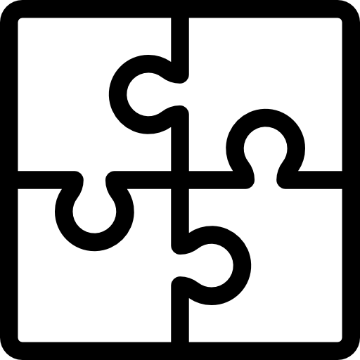

Hi! My name is Raveesha Arora. I am a rising junior at the University of Maryland, College Park and I am studying computer engineering. For the past two summers, I have worked at two different financial companies within their tech department to grow my coding skills in both front-end and back-end and also my interpersonal and communication skills. I would love to grow my skill set and contribute by developing new softwares and technologies. My passions include designing a product from front-end to back-end and learning about emerging technologies such as artificial intelligence and virtual reality.
When I'm not learning new languages or reading up about the new technologies out there, I love
 |
 | |
| reading books | solving puzzles | watching crime tv shows |